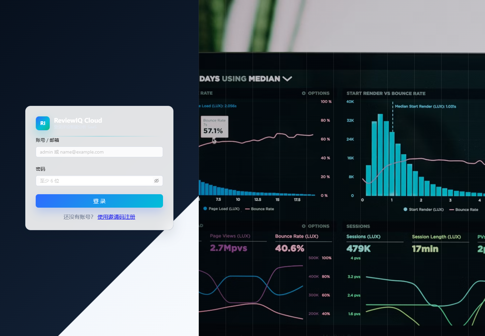

可以操作
- 查看任务看板和额度
- 创建一次性采集任务
- 创建、暂停、立即运行监听任务
- 发起 AI 分析并查看报告
- 检索、筛选、导出和修正评论
- 删除不再需要的采集或分析记录
Module 01
培训开场先明确权限边界，减少误操作和沟通成本。普通用户的重点是把评论数据采集进来、发起分析、复核结果并形成行动项。
普通用户先确认链接、来源渠道、分析类型和任务状态。涉及模型、抓取底层、登录接口或服务器日志的问题，交由管理员处理。
Module 02
日常使用时不需要从系统菜单开始记忆，只要记住这条业务链路。
Module 03
登录后优先查看任务看板，确认额度、任务数量、完成情况和最近任务。看板适合每天开始工作时做一次快速巡检。

登录页：输入账号和密码后进入任务看板。

任务看板：查看额度、任务总数、完成情况和最近分析任务。
Module 04
一次性采集适合临时分析某条视频、某次活动或某个内容链接。培训时建议现场准备一条公开可访问、评论区开启的链接。
来源渠道和分析类型会影响后续报告质量。YouTube 视频类评论不要按商品评论处理，否则可能出现用户声音偏电商、情绪判断异常或 NPS 不合理。

新建一次性采集：填写链接、来源渠道、分析类型和采集数量。

评论采集控制台：查看持续监听任务和每次采集记录。
Module 05
持续监听用于长期跟踪同一条视频或内容链接的新评论。适合新品发布、热门视频、投放内容、舆情内容和需要长期复盘的链接。

新建监听任务：设置频率后，系统会定期采集新评论。
| 操作 | 适用场景 | 讲解重点 |
|---|---|---|
| 启用或暂停 | 控制任务是否继续按频率运行。 | 暂停不会删除历史数据，只是停止后续自动运行。 |
| 立即运行 | 需要马上补采一次评论。 | 不用等下一次计划时间，适合临时复盘前刷新数据。 |
| 自动分析 | 希望每次采集完成后自动产出报告。 | 适合稳定监听；如果想人工确认评论数量，可先关闭。 |
| 删除 | 监听对象已经结束或任务创建错误。 | 删除前确认任务名称和链接，避免误删。 |
Module 06
采集完成后，普通用户可以从采集记录中发起 AI 分析，也可以在分析记录中查看进度。大批量评论分析需要等待，速度会受模型服务、网络、额度和服务器性能影响。

分析记录：查看任务状态、分析进度和操作入口。
Module 07
评论明细是验证 AI 报告是否可靠的证据层。培训时建议演示一次关键词搜索、情绪筛选和导出流程。

评论明细：查看原始评论和 AI 标注，支持筛选、导出和修正。
Module 08
增长运营页面用于把主题、痛点、机会点和建议沉淀成可跟进事项。它适合周会复盘、内容选题、用户反馈闭环和投放效果复盘。

增长运营：将评论洞察转化为后续运营动作。
Module 09
系统会根据当前设备识别 PC 或移动端并显示对应布局。手机更适合查看状态、刷新任务、查看报告和处理轻量操作。

移动端看板：适合随时查看状态和轻量处理任务。
Module 10
这些问题适合培训最后统一讲，也适合做内部答疑口径。
| 问题 | 普通用户先做什么 | 何时找管理员 |
|---|---|---|
| 登录失败 | 确认账号密码，刷新页面后重试。 | 多次失败、账号被禁用、接口返回异常。 |
| 未采集到评论 | 打开链接确认评论区可见，检查来源渠道是否正确。 | 公开评论仍无法采集，或多个链接都失败。 |
| 只采集到少量评论 | 提高最多采集条数，或改用持续监听分批采集。 | 明显少于页面可见数量，且多次重试无改善。 |
| 分析速度慢 | 等待任务完成，避免重复创建大量分析任务。 | 长时间无进度、队列卡住或所有任务都变慢。 |
| 视频报告像商品报告 | 确认任务是否选择“视频类评论”。 | 类型正确但仍持续出现电商词汇或 NPS 异常。 |
| 误删任务 | 立即停止重复操作，记录任务名称和时间。 | 需要管理员检查备份或数据库记录。 |
Trainer Checklist
培训前按这份清单准备，可以让现场演示更顺。